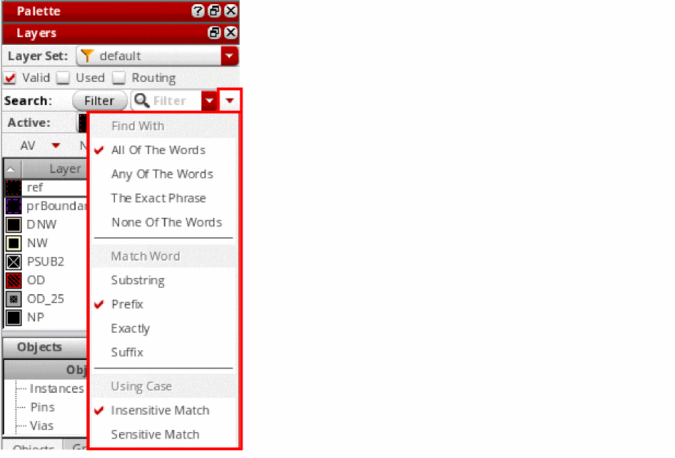

Searching for a Layer
Using the Search toolbar, you can search for specific layer-purpose pairs in the Layers panel. You can perform the search in Filter and Find modes.
In Filter mode, only the layer-purpose pairs that match the specified search criteria are listed in the Layers panel and the active layer does not change. In Find mode, all layers continue to be listed in the Layers panel and the first layer that matches the search criteria becomes the active layer. If you now press Enter, the next layer that matches the search criteria becomes the active layer. You can continue to press Enter to move through the list of matching layer-purpose pairs in a cyclic manner.
Additionally, in Find mode, search is performed only on the layers that are currently listed in the Layers panel. For example, consider a layer set named ls1 that contains layers via1 to via10. Of these, only via1 to via3 are listed in the Layers panel if the Used check box is selected. At this point, if you search for via5 by using Find, the search will be unsuccessful.
In the Objects and Grids panels, you can use the Search toolbar to search for specific objects and grids, respectively.
To search for a layer-purpose pair:
- On the Search toolbar in the Layers panel, set the search mode as Find or Filter. The default search mode is Filter.
-
Optionally, click the Advanced arrow icon on the toolbar to display advanced search options. Then, select the required options in the Find With, Match Word, and Using Case search categories. By default, the search operation is case-insensitive and looks for all values that begin with the specified string (prefix).
 -
Type a search string in the Filter or Find field.
As you type individual characters, you can see the information in the Layers panel getting updated. Finally, the search returns all layer-purpose pairs that contain the specified string in any of the columns displayed in the applicable panel. The advanced search options determine the results that a search operation returns.
If a search string contains a space, it is interpreted as two strings. In such cases, the search operation searches one by one for each string in all the displayed columns and returns layer-purpose pairs that have a column value starting with one of the two strings and another column value starting with the other string. This is the default behavior.
Related Topics
Return to top